Mô hình tốt nhất (theo CV): Logistic Regression
Tham số: {'C': 0.001}
Độ chính xác test (%): 100.0
Số thành phần PCA: 33
Ngưỡng người lạ: 0.6
FAR / FRR tại ngưỡng (%): -
Người được điểm danh (trong lớp): bao, cao, hieu, lam, the_anh, tuan_tuanchoi
| mo_hinh | tham_so | cv_% | test_% | precision | recall | f1 | ms_moi_anh |
|---|---|---|---|---|---|---|---|
| Logistic Regression | {'C': 0.001} | 100.00 | 100.00 | 1.000 | 1.000 | 1.000 | 0.757 |
| KNN | {'n_neighbors': 1} | 100.00 | 100.00 | 1.000 | 1.000 | 1.000 | 0.719 |
| SVM linear | {'C': 0.0001} | 100.00 | 100.00 | 1.000 | 1.000 | 1.000 | 0.059 |
| SVM poly | {'C': 1, 'degree': 2} | 100.00 | 100.00 | 1.000 | 1.000 | 1.000 | 0.081 |
| SVM rbf | {'C': 1, 'gamma': 1e-05} | 100.00 | 100.00 | 1.000 | 1.000 | 1.000 | 0.094 |
| Naive Bayes | {'var_smoothing': 1e-09} | 100.00 | 100.00 | 1.000 | 1.000 | 1.000 | 0.111 |
| Decision Tree | {'criterion': 'gini', 'max_depth': 10} | 92.54 | 97.92 | 0.981 | 0.979 | 0.979 | 0.074 |
1_anh_mau.png
1_can_bang_sang.png
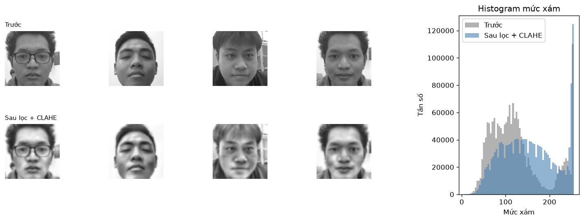
1_so_anh_moi_nguoi.png
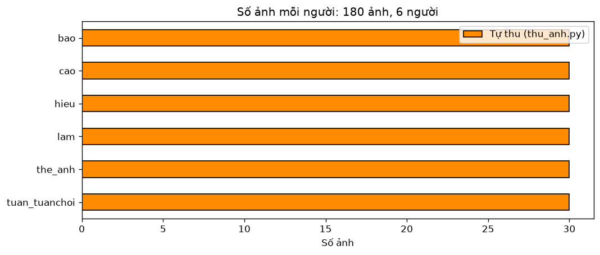
2_chia_train_test.png
3_eigenfaces.png
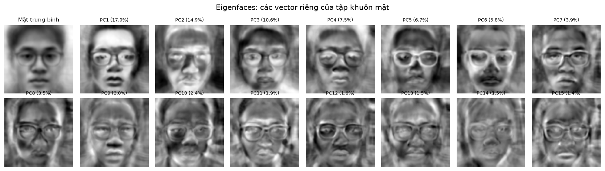
3_khoi_phuc_pca.png
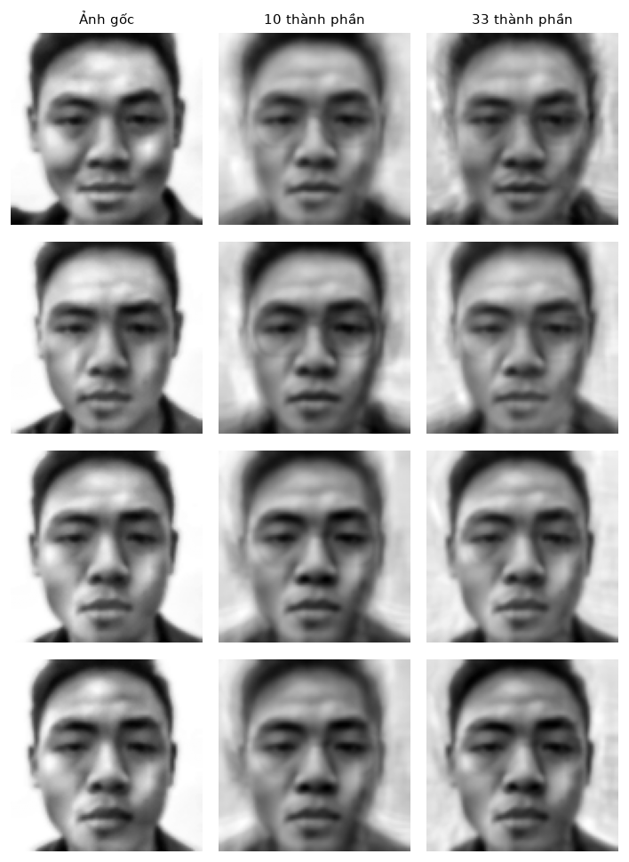
3_pca_phuong_sai.png
3_truoc_sau_pca.png
3_cay_quyet_dinh.png
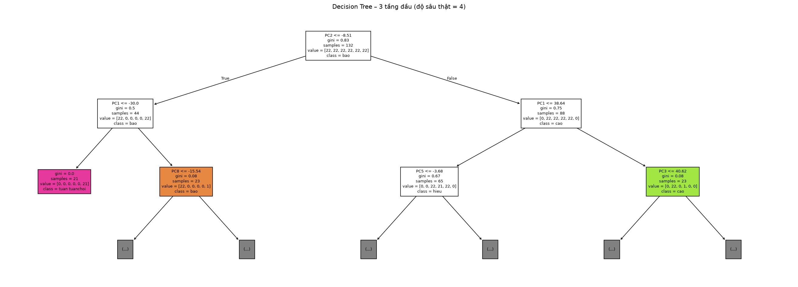
3_cv_cac_mo_hinh.png
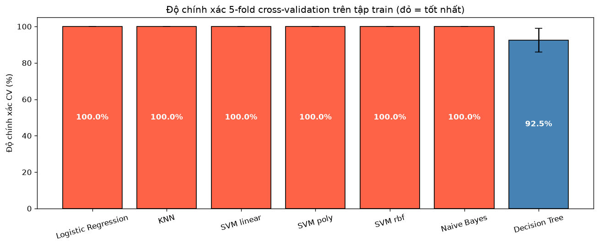
3_svm_rbf_C_gamma.png
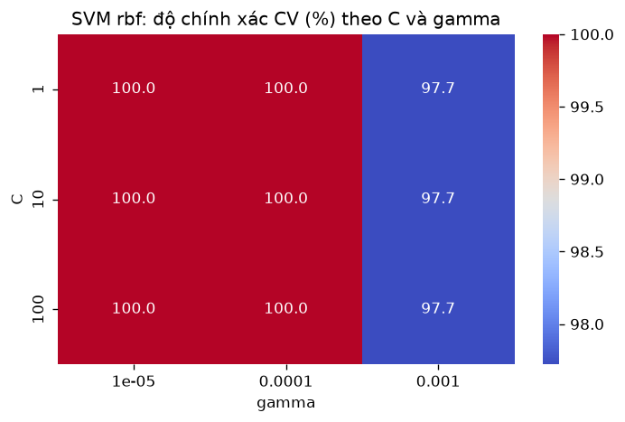
4_du_doan_tap_test.png
4_xac_suat_du_doan.png
5_ma_tran_nham_lan_cac_mo_hinh.png
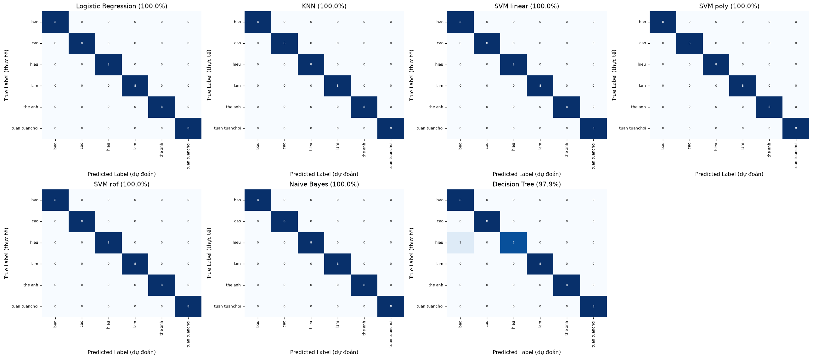
5_ma_tran_nham_lan_tot_nhat.png
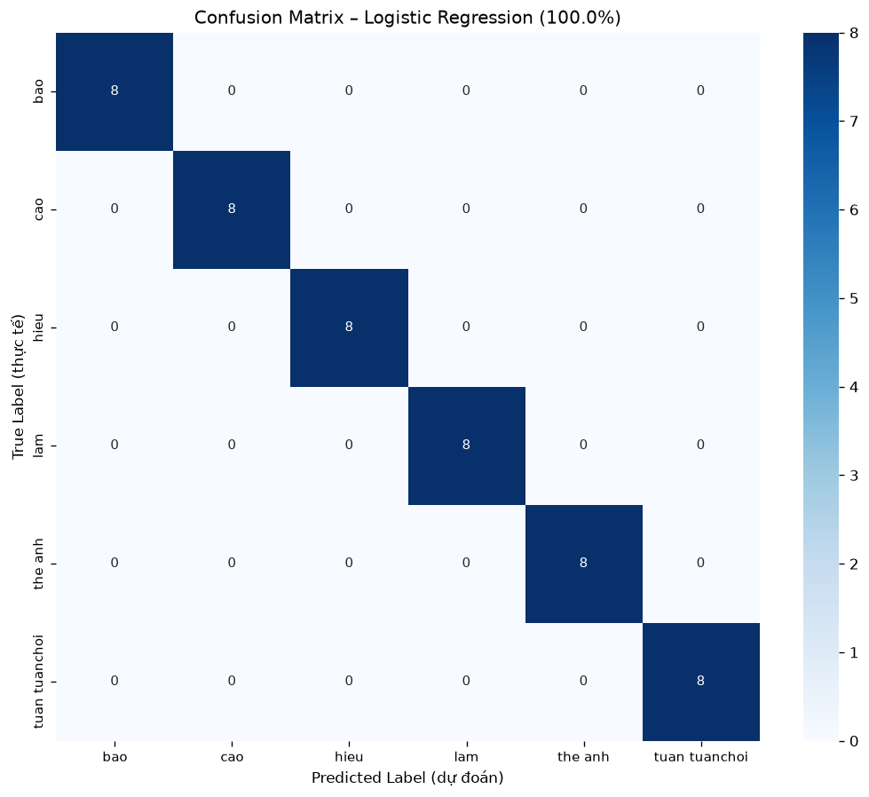
5_roc_tot_nhat.png
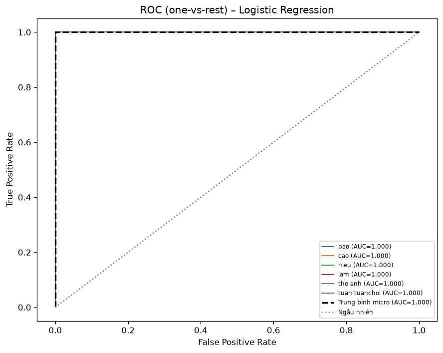
5_so_sanh_mo_hinh.png
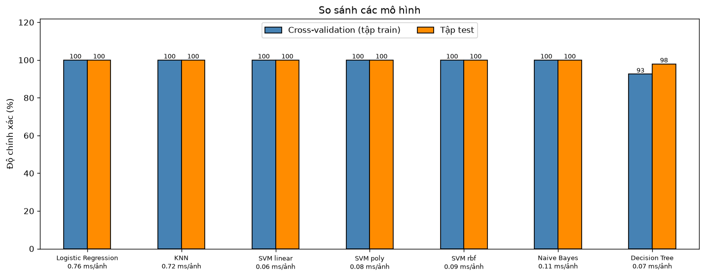
5_theo_nguon_anh.png
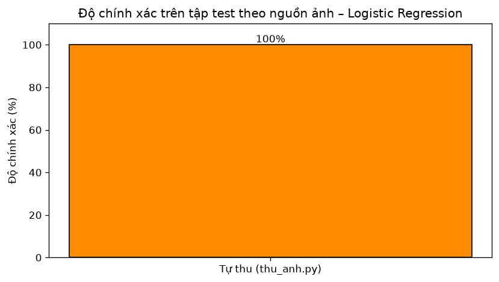
5_theo_tu_the.png